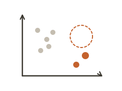
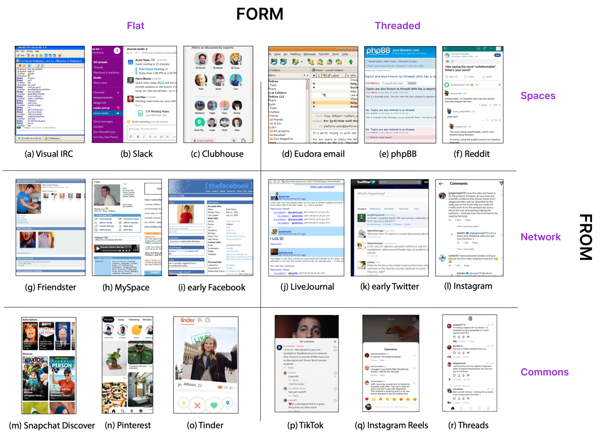
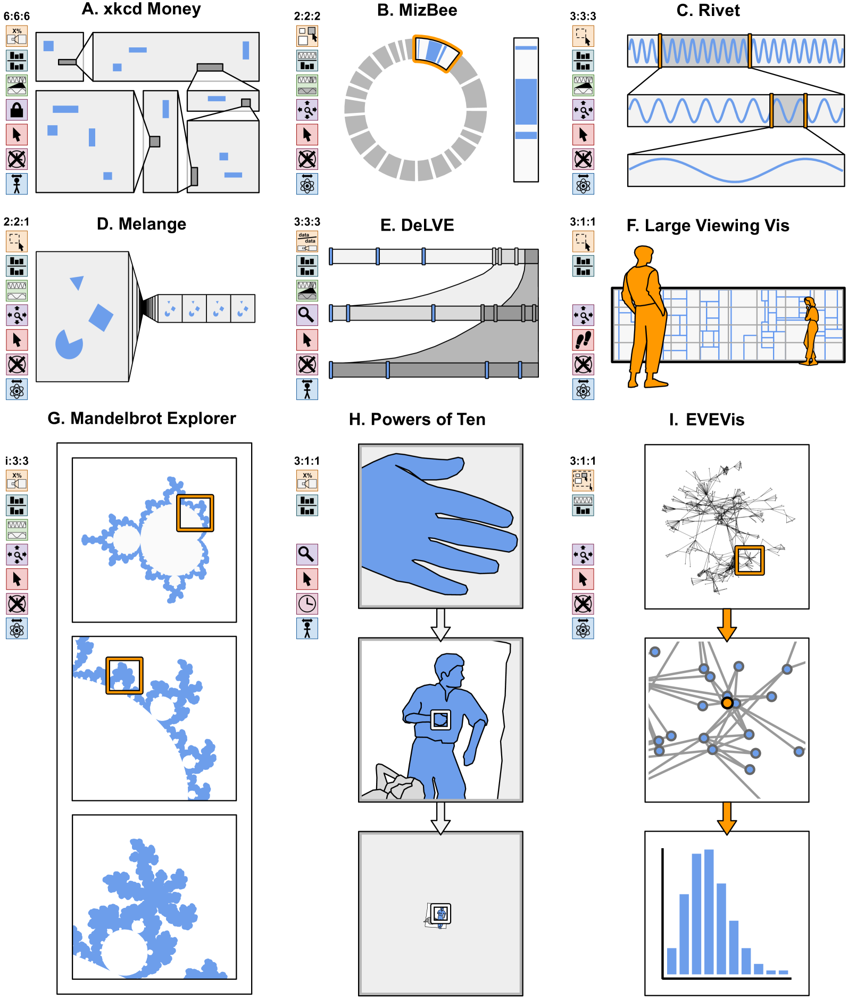
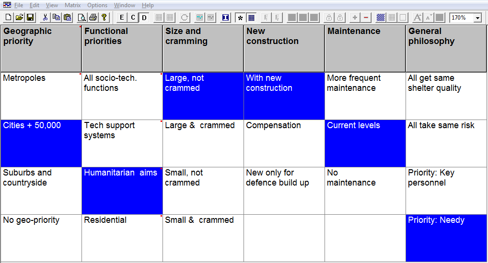
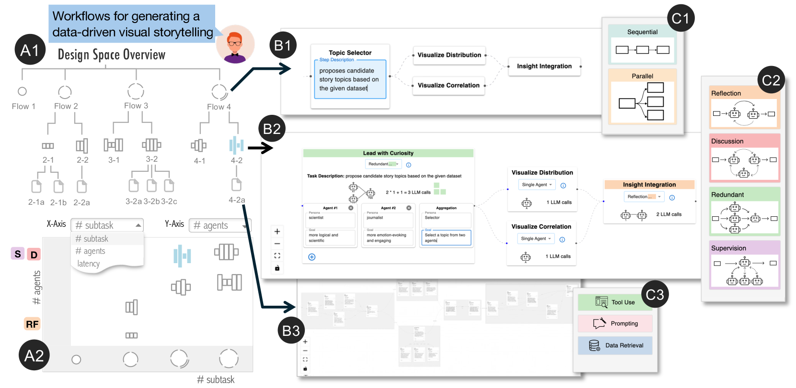
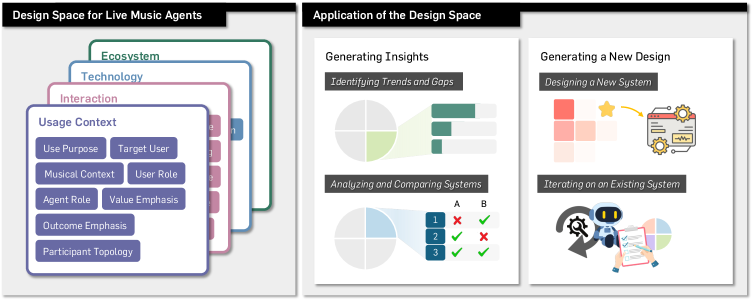

Design space map
About
A design space map charts the landscape of possible solutions along two or more defining dimensions, then locates existing and candidate concepts within it. By making the axes of difference explicit — the variables along which solutions actually vary — it reveals clusters of similar ideas, crowded regions, and, most usefully, the empty areas no one has explored yet. It reframes ideation as deliberate coverage of a space rather than an unstructured list of ideas, and doubles as a way to position concepts against competitors and against one another.
When to use
Use a design space map to compare and position concepts, to find unexplored gaps worth pursuing, and to give structure to ideation or competitive analysis by agreeing on the dimensions that genuinely distinguish solutions.
When not to use
Avoid it before the meaningful dimensions are understood — axes chosen too early can constrain thinking around the wrong variables — and don't let positioning in the space substitute for evaluating concepts against real user needs.
References
Examples
Click any example to view full size and visit the original source.




